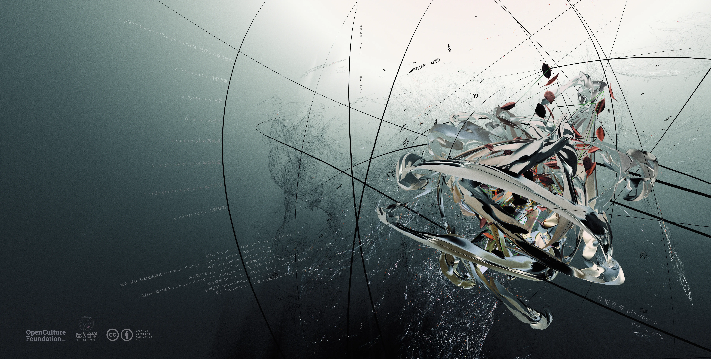

《時間浸漬 Bioerosion》專輯曲目、專輯封面採用創用 CC 姓名標示（CC-BY 4.0）
方式授權提供。
如欲使用本專輯的音樂或視聽作品，及其多媒體素材，包含商業用途，請標示以下文字，即可合法使用本專輯內容，無需另行取得發行者或創作者的許可： 《時間浸漬 Bioerosion》，由財團法人開放文化基金會發行，林強編曲，與 Luca Bonaccorsi 共同構思創作，於 2024 年 9 月發行，採用 CC BY 4.0 授權條款。
To lawfully use the music or audiovisual works from this album, as well as its multimedia materials, including for commercial purposes, please include the following attribution: “時間浸漬 Bioerosion, composed by Lim Giong, conceptually developed by Lim Giong and Luca Bonaccorsi, released by the Open Culture Foundation in September 2024, licensed under CC BY 4.0. ”
No additional permission from the publisher or creators is required.

開放文化基金會（Open Culture Foundation, OCF）成立十週年，策劃以科技跨界為主題的盛典「開源祭」，邀請多位知名音樂人及科技領域專家共同歡慶，探索未來科技與創意的無限可能。林強與義大利藝術家 Luca Bonaccorsi，推出基於「開放」與「分享」兩大核心理念所創作的全新專輯《時間浸漬 Bioerosion》，展現音樂及視覺藝術的創新融合。
此專輯為林強繼 2005 年《驚蟄》之後，時隔 19 年再次在臺灣推出的電子音樂作品。整張專輯採用 CC-BY 4.0 授權方式發布，鼓勵民眾以此為素材進行二次創作。
1. 破裂水泥牆的植物 / plants breaking through concrete
05:04 (2304 kbps / 48.00 kHz / 87.6 MB)
2. 液態金屬 / liquid metal
04:57 (2304 kbps / 48.00 kHz / 85.6 MB)
3. 液壓 / hydraulics
05:00 (2304 kbps / 48.00 kHz / 86.4 MB)
4. 水分子 / OH－ H+
05:00 (2304 kbps / 48.00 kHz / 86.4 MB)
5. 蒸氣機 / steam engine
05:00 (2304 kbps / 48.00 kHz / 86.4 MB)
6. 噪音振幅 / amplitude of noise
04:53 (2304 kbps / 48.00 kHz / 84.6 MB)
7. 地下管道 / underground water pipe
05:00 (2304 kbps / 48.00 kHz / 86.4 MB)
8. 人類廢墟 / human ruins
05:00 (2304 kbps / 48.00 kHz / 86.4 MB)
其他平台
授權可使用的素材
我們鼓勵您重新混音與剪輯影像、與朋友分享，或發布到您的部落格和 Podcast，將音樂與影像傳遞給更多人。透過分享，讓作品啟發更多人，激盪出創作靈感的火花，共同為世界注入無限創意。
We encourage you to remix the music and re-edit the videos, share them with your friends, post them on your blog, or feature them on your podcast. The intention behind this artwork is to spark creativity and inspire new ideas among people around the world.
專輯發行資訊
Album Release Information
其他可使用的素材
何謂創用 CC？
創用 CC 是 Creative Commons 的縮寫，是一套授權條款，為創作者提供一種簡單的方式來授權他們的作品給大眾使用。這些授權條款允許創作者指定哪些使用方式是允許的，例如是否可以進行商業用途、是否可以修改作品等。創用 CC 的主要目的是促進知識共享和創意發展，讓更多人能夠合法地使用、分享和改作其他人的創作。創用 CC 授權條款通常以不同組合出現，例如：姓名標示（BY）、非商業性（NC）、相同方式分享（SA）等。
什麼是開源祭？
開源祭活動是一個融合音樂與科技藝術的盛會，已在 2024/09/14 舉辦，我們邀請到林強、百合花、PUZZLEMAN、拷秋勤等知名音樂人進行精彩的表演，同時舉辦開放文化基金會十週年特展和主題講座。
了解更多關於十週年開源祭活動，可參考活動頁面。
什麼是開放文化基金會？
開放文化基金會（OCF）是一個非營利性組織，致力於與科技社群和公民夥伴合作，推動臺灣的數位、網路環境更加開放、透明，並促進公眾參與，以實現數位人權的保障。自 2014 年成立以來，我們一直堅持這一使命，以孕育一個充滿活力的開源生態系為目標，我們向公民社會推廣，同時也對政府倡議、與國際交流以推動開源文化的普及與實踐。
了解更多關於我們的努力與執行的專案，歡迎前往開放文化基金會網站。